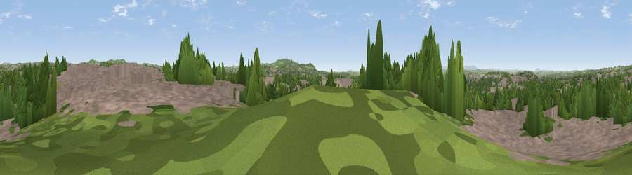

Brierley Hill
#23512 in England · top 38% of its area beats it · near Brierley HillWhere it is
The exact computed spot (SO 91624 86864). Click the marker for map links.
The view, rendered

A 360° render of this exact spot computed from the terrain model, tree cover and land cover — summer colours, afternoon light, calibrated against photographs of famous viewpoints. Real trees, hedges and buildings will differ in detail.
The panorama
Grey silhouette: terrain skyline in each direction (720 bearings, Earth curvature and refraction included). Dashed green: skyline with trees (+15 m) and buildings (+8 m) as obstacles. Blue strip: how far the ground is visible on each bearing.
Where the view opens
Wedge length = distance to the farthest visible ground on that bearing (vegetation-aware). Rings at 10, 25 and 50 km.
What fills the view
52% built-up · 38% woodland · 8% grassland · 2% cropland
Angular shares of the visible panorama (visual magnitude), not map area. Landscape diversity 0.43 (0–1 Shannon).
Key numbers
More beautiful places nearby
The staircase of upgrades: each row has a higher view potential than everything closer. Driving times are estimates from straight-line distance, calibrated against real road routing — check an actual route before setting out.
| Place | Direction | Drive | Score |
|---|---|---|---|
| Viewpoint near Wordsley | W · 4 km | ~9 min | 56.1 |
| Viewpoint near Oakham | ENE · 5 km | ~11 min | 66.4 |
| Wychbury Hill | S · 5 km | ~11 min | 68.0 |
| Viewpoint near Oakham | ENE · 5 km | ~12 min | 68.8 |
| Viewpoint near Clent | SSE · 7 km | ~14 min | 73.8 |
| Viewpoint near Clent | SSE · 7 km | ~14 min | 74.3 |
| Knowle Hill | WSW · 23 km | ~38 min | 75.5 |
| Viewpoint near Abberley | SW · 25 km | ~40 min | 77.5 |
52.47964, -2.12475 · source: osm peak · position refined by local search. Computed location — check access rights before visiting.